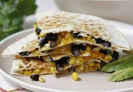

Black Bean and Corn Quesadillas

Description
Get ready for some black bean and corn quesadillas! Really cheesy, a
little bit spicy, a little bit sweet, and all the way delicious.
Ingredients
- 2 teaspoons olive oil
- 3 tablespoons finely chopped onion
- 1 (15.5 ounce) can black beans, drained and rinsed
- 1 (10 ounce) can whole kernel corn, drained
- 1 tablespoon brown sugar
- 1/4 cup salsa
- 1/4 teaspoon red pepper flakes
- 2 tablespoons butter, divide
- 8 (8 inch) flour tortillas
- 1 1/2 cups shredded Monterey Jack cheese, divided
Steps
-
Heat oil in a large saucepan over medium heat. Stir in onion, and cook
until softened, about 2 minutes. Stir in beans and corn, then add sugar,
salsa, and pepper flakes; mix well. Cook until heated through, about 3
minutes.
-
Melt 2 teaspoons of the butter in a large skillet over medium heat.
Place a tortilla in the skillet, sprinkle evenly with cheese, then top
with some of the bean mixture. Place another tortilla on top, cook until
golden, then flip and cook on the other side. Melt more butter as
needed, and repeat with remaining tortillas and filling.